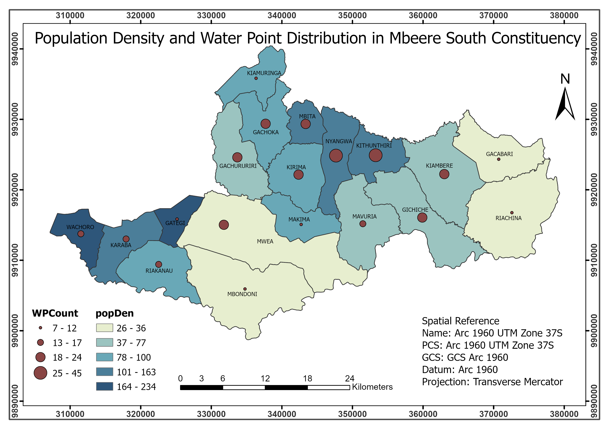
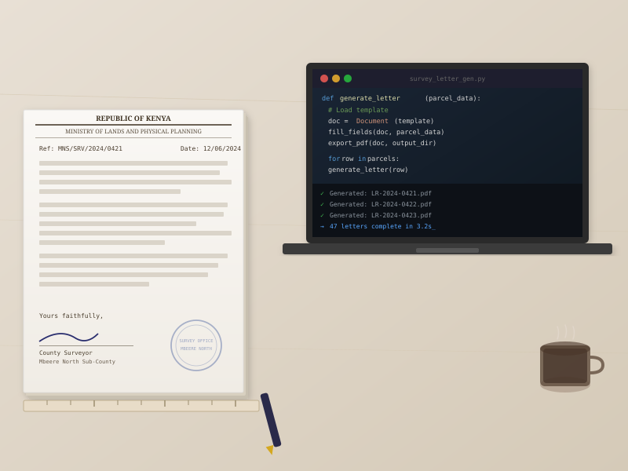

ELIAS FUNDI
Geomatics & GIS · Backend Dev
Work
About
Blog
Resume
LinkedIn

HydroGPT
Water Accessibility Platform · PostGIS · FastAPI · AI Query Interface
→
Toronto Crime Analysis
Spatial Analysis · Network Analysis · Density Mapping · ArcGIS Pro
→
Haiti Land Surface Temperature
Remote Sensing · Landsat Thermal Bands · Urban Heat Analysis · QGIS
→
Mkulima Mega Cereals
Supply Chain Platform · Flask · PostgreSQL · Role-Based Access
→
Amsterdam NDVI Analysis
Raster Analysis · Vegetation Index · ArcGIS Pro · Remote Sensing
→
Murangʼa County Cadastral
Physical Development Plans · Boundary Mapping · COGO · ArcGIS Pro
→

Ruth — Survey Office Automation
Letter Generation Tool · Streamlit · Ollama / LLaMA · Python
→